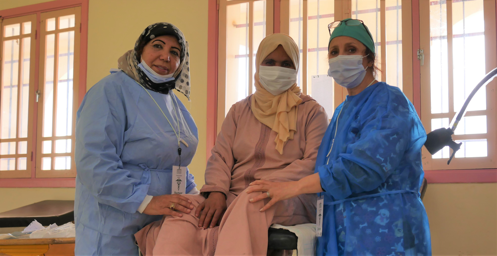
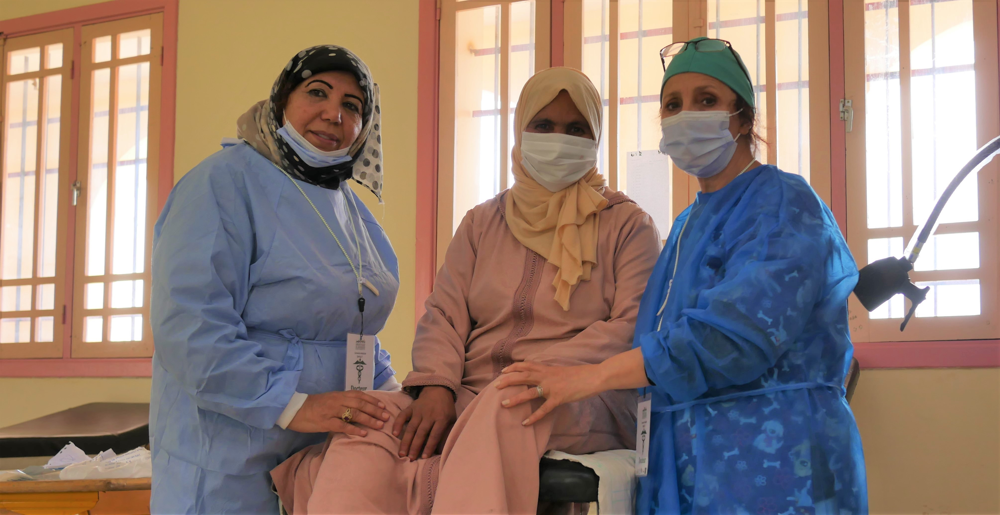

As part of their social and humanitarian activities, the students of Al Akhawayn University of Ifrane active in the respective student clubs of Hand in Hand, Lions, Mimouna, Friends of Migrants and Enactus, recently organized a multidisciplinary medical caravan in the mountainous locality of Ait Yahya Oualla, coming under the territorial collectivity of Tigrigra located a few kilometers from Azrou. Organized in partnership with the Socio-Medical Solidarity Association Without Borders of Rabat and the Avicenna Club of the Faculty of Medicine and Pharmacy of Fez, and in close collaboration with the Provincial Health Delegation of Ifrane and the local authorities, this The caravan's objectives were to support and bring health services closer to the mountain population, to improve health coverage in remote rural areas and, in addition, to provide assistance to the inhabitants of these areas who suffer from difficulties in accessing medical treatment.


During this caravan, around 750 people benefited from the necessary consultations and care as well as prevention awareness provided by a total of 56 doctors and nursing staff, in the specialties of pneumology, pediatrics, gastrology, gynecology, traumatology, ENT, cardiology, ophthalmology, psychiatry, radiology, oncology, general surgery, dental surgery, maxillofacial surgery, and general medicine. To this must also be added the distribution of drugs free of charge to patients according to the prescriptions prescribed to them.
This initiative, which is part of the actions of student clubs and particularly in line with the social responsibility of the university, was also an opportunity to raise awareness around Covid-19, for the application of barrier gestures to limit the risks of the spread and contamination of the Coronavirus, as well as the importance of screening and vaccination.

 
